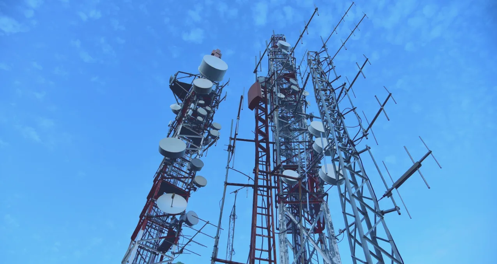

ABOUT UK CELLNET
Britain's cellular infrastructure
Here at UK Cellnet, our mission goes beyond providing mobile data. Through building and maintaining a world-leading network of mobile phone masts, we keep everyone - from the emergency services to businesses to families - connected to the rest of the world.
Whichever mobile data provider you use, you can be secure in the knowledge that their masts are rented from the best in the business.